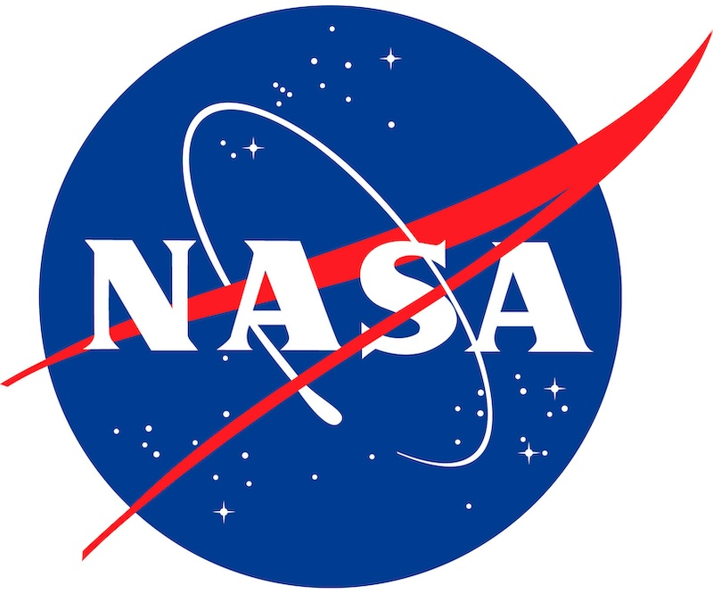
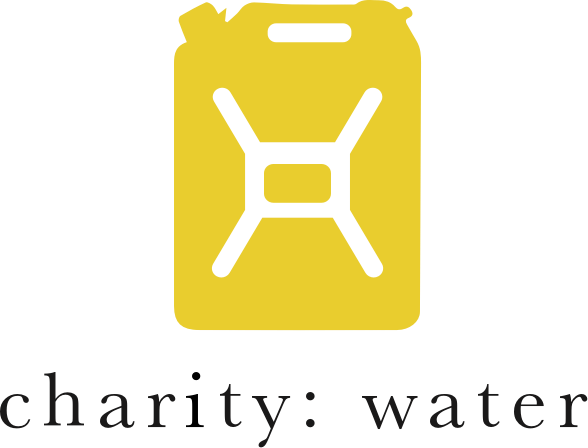

A women-centered healthcare UX case study using mixed-methods research, Figma prototyping, and usability testing to improve trust and clarity.
View project
UI/UX Designer • Product Thinker • Front-End Builder
I am Nidhi, a UI/UX and product-focused designer blending interaction design, accessibility, and front-end craft to create clear, high-impact experiences.
I approach design as a bridge between user needs, business goals, and technical feasibility. My work spans UX research synthesis, interaction flows, visual systems, and front-end implementation, with a strong emphasis on accessibility and clarity.
Selected work across research, systems thinking, and interactive product storytelling.
A women-centered healthcare UX case study using mixed-methods research, Figma prototyping, and usability testing to improve trust and clarity.
View project
An interactive sustainability storytelling webpage built with responsive structure, accessibility improvements, and RTL-ready localization support.
View project
An interactive event check-in dashboard that tracks attendance, surfaces team analytics, and visualizes live progress for faster decisions.
View project
A NASA-inspired interactive web app combining space imagery and data through structured storytelling, responsive layouts, and clear visual hierarchy.
View project
A charity: water-inspired browser game built with HTML, CSS, and JavaScript featuring scoring, weather interactions, and engagement-focused responsive design.
View projectDelivered user-centered web experiences from discovery to high-fidelity prototypes and front-end handoff, with measurable improvements in usability.
Built interactive storytelling interfaces and data-led experiences for technical and mission-driven domains.
Looking for a designer who thinks in systems and builds with users in mind? Let us connect.